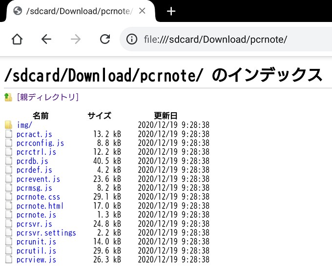
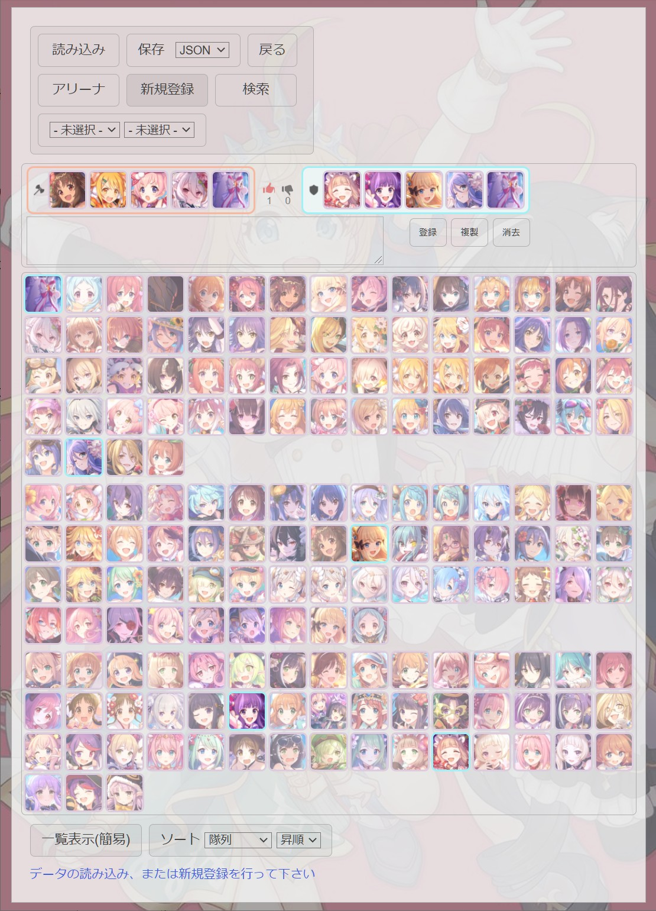

※お試し用でサーバーに接続する場合、データベース名はpcrnoteとしてください(ユーザー名は何でも可)
プリンセスコネクト！Re:Dive(プリコネR)用のアリーナ、クランバトル(クラバト)の編成を記録するツールです
攻撃側と防衛側の編成(評価やコメントも付与可)を入力し、登録していきます
登録した編成は、ユニットやハッシュタグで検索が可能です
個人、身内で利用すること前提に作ってあるため、データは誰かに貰うか、自身で登録する必要があります
ブラウザ上で動作します
Chrome、Firefox、Safari、Edge、Operaで動作確認済
Internet Explorerや古いバージョンのブラウザではおそらく動きません
ローカルモードで利用する場合、ブラウザのみで利用可能です
サーバーモードで利用する場合、Node.jsを実行できるサーバーを用意する必要があります
Node.js用サーバーの構築方法は別サイトを参考にしてください
最初の設定画面の、サーバーに接続のチェックボックスでモードを切り替えます
ローカルモードは、登録したデータをダウンロードして保存する方式です
手軽に使えますが、次回利用時はデータファイルをアップロードする手間がかかります
サーバーモードは、サーバー側にデータファイルを保存する方式です
構築に手間がかかりますが、ボタン一つでデータの読み込み、保存ができます
複数の端末やユーザーでデータを共有する場合、サーバーモードがおすすめです
上記リンクからダウンロードし、zipファイルを解凍します
PCの場合、pcrnote.htmlをブラウザで開けば利用可能です
Android端末の場合、ファイル管理アプリからpcrnote.htmlを開くとおそらく動作しません
ブラウザのURL欄にfile:///sdcardと打つとローカルファイル一覧が出てくるので、そこからpcrnote.htmlのある場所を辿っていってください

iOS端末の場合、ローカルファイルのhtmlを正しく動作させるのに手間がかかるので、上記リンクのお試し用をサーバーに接続のチェックを外して利用ください
もしくは、ホームページ用サーバー等に解凍したファイルを丸ごとアップロードすれば、iOS端末からでも利用できるようになります
ローカルファイルから起動した場合、クッキーに保存は使用できません
ホームページ用サーバー等にアップロードすれば、クッキーに保存が使用可能になります
ユーザー名やデータベース名(保存時のファイル名として使用)の入力は任意です
上記リンクからダウンロードし、zipファイル解凍後、適当な場所へ配置します
配置したディレクトリに合わせ、サーバー用設定ファイル(pcrsvr.settings)を修正します
詳細はpcrsvr.settingsファイル内の説明を読んでください
サーバー用設定ファイルの修正が完了したらNode.jsでサーバープログラム(pcrsvr.js)を実行します
後はブラウザから自身のサーバーURLへアクセスしてください
ユーザー名の入力は任意、データベース名の入力は必須ですが、特定のユーザー名、データベース名でないと利用できないようにすることもできます
パスワードという概念はありません
Node.jsを使用しているため、利用する場合は自己責任でお願いします
知らない人が変更したpcrsvr.jsをNode.jsで実行するのは危険なので避けてください(他の.jsファイルの変更も同様です)

まだ1件も編成を登録していない場合、新規登録を行う必要があります
登録しただけではブラウザを閉じたりページを更新すると消えてしまうため、その後保存or更新確定をする必要があります
ローカルモードではサーバー側にデータの保存ができないので、保存ボタンでデータファイルをローカルにダウンロードしてください
次回利用時は読み込みボタンからダウンロードしたデータファイルを読み込んでください
ダウンロードしたデータファイルはダウンロードする毎にどんどん増えていってしまうため、古いデータファイルが邪魔な場合は手動で移動or削除してください
セレクトボックスのJSONとCSVは保存ファイル形式が違うだけで同様に保存できます
TEMPは現在の入力状態をクッキーに保存するためのものなので、一時中断したい場合に利用してください(ローカルファイルから起動した場合は使用不可)
サーバーモードでは登録した後、同期ボタンが更新確定ボタンに変わるので、これを押して初めてサーバー側にデータが保存されます
次回利用時は同期ボタンを押すとサーバー側のデータが読み込まれます
登録済み編成の修正、削除時も、自動的にサーバー側は更新されないので、更新確定ボタンを押して更新してください
ユニット検索では、防衛側に入力したユニットに合致する編成を検索します
攻撃側の編成は入力しても検索結果には影響しません
防衛側編成部をダブルクリック(タップ)することで、どのユニットとも合致するワイルドカードを設定することができます
ワイルドカード利用時はユニットの隊列位置も厳密にチェックします
真ん中の数字をダブルクリック(タップ)すると、攻守を入れ替えることができます
切替ボタンで複数の検索条件を保持しておくことができます
ユニット検索で入力した編成を新規登録にコピーしたい場合、新規登録にある複製ボタンでコピーすることができます
検索結果一覧からも同様に新規登録やユニット検索へコピーすることができます

編成の登録、更新時に、コメント欄に#から始まる短い文字列を入力することで、ハッシュタグ検索を行うことができます
-未選択-と表示されているセレクトボックスから-再構築-を選ぶと、入力したハッシュタグが一覧に追加されるので、ハッシュタグ検索ができるようになります
登録済みのデータを読み込みor同期した場合、自動的にハッシュタグを取得してくるので、再度-再構築-を選ぶ必要はありません
ハッシュタグ検索は2つの条件まで同時に指定でき、ユニット検索との併用も可能です